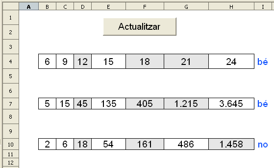

UF4. Fulls de càlcul
Mòdul 5 - Exercici 4
Sèries
Presentació gràfica de l'activitat

Funcions que es fan servir en aquesta activitat
- Operador de suma (+)
Desenvolupament de l'activitat
Fer sèries per completar.
Suposem que es tracta de completar una sèrie que de manera alteatòria comença per un número i segueix una determinada progressió aritmètica o geomètrica. Per fer aquesta activitat és necessari obtenir de manera automàtic un valor aleatori d'inici i un valor de progressió.
Procediment a seguir
1. Obrir el fitxer M5 i afegir un nou full amb el nom de M5P4 sèries.
2. Escriure a la cela J4: =SI(A1=0;ALEATENTRE(1;9)). Que seria el valor d'inici de la sèrie.
3. Escriure a la cela J3 el següent =SI($A$1=0;ALEATENTRE(1;9)). Que seria el valor de la progressió aritmètica de la sèrie.
Cada vegada que la cel·la A1 té el valor 0, s'actualitzen les dades del valor inicial i del valor progressiu de la sèrie.
4. Escriure a la cel·la K4 el següent:=(J4+$J$3). Que representa el valor del segon terme de la progressió aritmètica.5. Copiar el valor de la cel·la K4 al rang L4:P4. D'aquesta manera ja tenim la sèrie feta amb les condicions que s'han indicat.
6. Escriure a la cel·la B4 escrivim =J4
7. Copiar el valor de la cel·la B4 i enganxar-lo a les cel·les del rang C4:H4. D'aquesta manera tornem a reproduir la sèrie que ja estava feta al rang J4:P4
8. Esborrar el contingut que hi ha a les cel·les D4, F4 i G4. Que seran les cel·les que caldrà omplir per completar la sèrie.
9. Escriure a la cel·la I4 el següent: =SI(O(D4="";F4="";G4="");"";SI(I(D4=L4;F4=N4;G4=O4);"bé";"no")) per fer l'avaluació.
Amb aquesta fórmula no es mostra l'avaluació a la cel·la I4 fins que la sèrie no estigui completa. En completar-la, es mostrarà l'avaluador “bé” o “no” en funció si es compleix o no la segona part de la fórmula SI(I(D4=L4;F4=N4;G4=O4);”bé”;”no”)).
10. Fer una macro amb les següent funcions:
- Esborrar la cel·la D4, F4 i G4.
- Assignar a la cel·la A1 el valor de 0
- Que la cel·la D4 rebi el focus.
11. Crear un botó (comandament) de Controls de formulari i assignar-li la macro feta anteriorment.
12. Validar la cel·la A1 per al valor 0.
13. Protegir les cel·les que convingui.
14. Ocultar les cel·les que convingui.
15. Comprovar que l'activitat funcioni correctament.
Les restants dues sèries segueixen un mecanisme semblant.
16. Desar el fitxer M5.
|
|

|
|
|